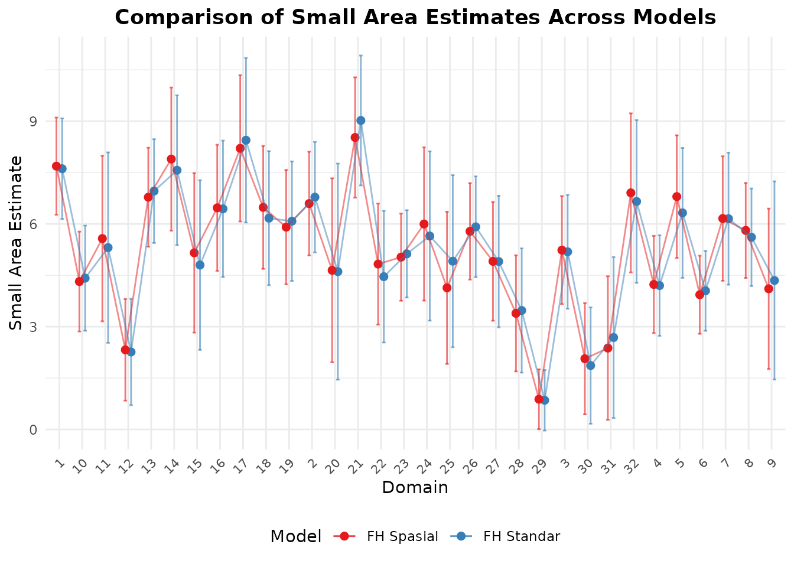
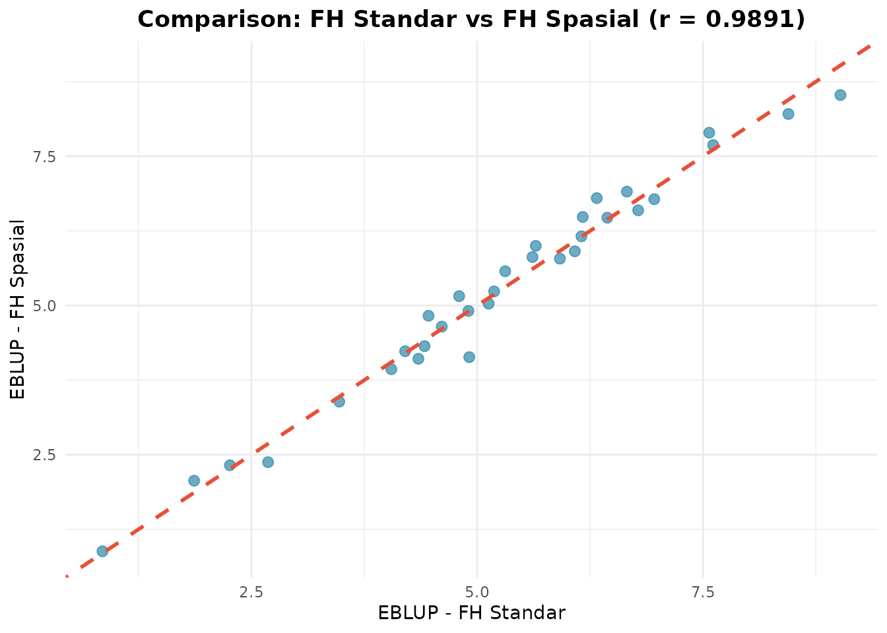
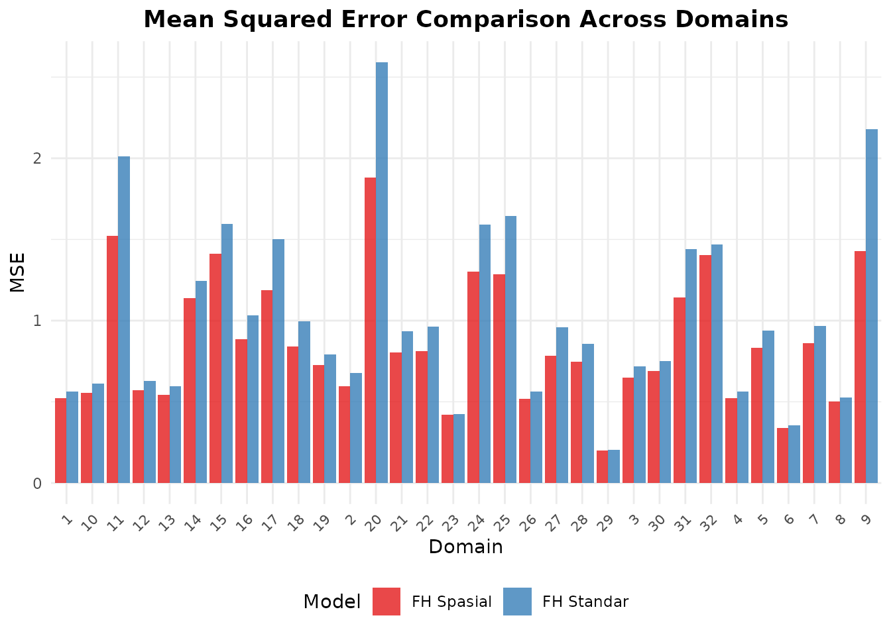

Model Spasial dan Spatio-Temporal
Source:vignettes/articles/id/spatial-temporal.Rmd
spatial-temporal.RmdGambaran Umum
Bila area kecil berupa unit geografis (kabupaten, kota, atau kecamatan), korelasi spasial sering muncul: wilayah yang bertetangga cenderung memiliki nilai yang lebih mirip daripada wilayah yang berjauhan. Selain itu, bila survei diulang selama beberapa tahun, ada pula korelasi temporal antarperiode.
fastsae menyediakan implementasi khusus berkinerja tinggi untuk keduanya:
-
Fay-Herriot Spasial (
eblup_sfh): efek acak Simultaneous Autoregressive SAR(1). -
Fay-Herriot Spatio-Temporal
(
eblup_stfh): gabungan efek acak spasial SAR(1) dan temporal AR(1).
1. Model Fay-Herriot Spasial (eblup_sfh)
Formulasi Model
Model Fay-Herriot Spasial (Pratesi & Salvati, 2008) memodelkan efek acak area dengan proses Simultaneous Autoregressive (SAR(1)):
dengan:
- adalah matriks kedekatan spasial () yang diketahui dan sudah distandardisasi per baris;
- adalah parameter autoregresif spasial;
- adalah galat inovasi yang saling bebas;
- adalah galat sampling dengan matriks diagonal .
Mengestimasi Model
library(fastsae)
data("mys")
data("mys_proxmat")
# Estimasi model Fay-Herriot Spasial dengan REML
fit_sfh <- eblup_sfh(
formula = y ~ x1 + x2 + x3,
vardir = ~vardir,
data = mys,
W = mys_proxmat,
method = "REML",
print_result = FALSE
)
summary(fit_sfh)
#>
#> ── Summary of fastsae Fit ──────────────────────────────────────────────────────
#> Call :
#> eblup_sfh(formula = y ~ x1 + x2 + x3, vardir = ~vardir, data = mys, method =
#> "REML", W = mys_proxmat, print_result = FALSE)
#>
#> ✔ Convergence: Yes (in 18 iterations)
#> Model: Spatial Fay-Herriot (Area-level SAR)
#> Method: REML
#>
#> Variance & Correlation Components:
#> parameter estimate std.error
#> sigma2_u 0.9892261 0.4797447
#> rho -1.0000000 NA
#> rho (spatial): -1
#>
#> Coefficients:
#> beta std.error zvalue pvalue
#> (Intercept) 3.2570714 0.6265689 5.1982651 0.0000
#> x1 -0.0020340 0.0080925 -0.2513457 0.8015
#> x2 0.0568516 0.0525488 1.0818827 0.2793
#> x3 0.0252179 0.0497283 0.5071123 0.6121
#>
#> Goodness of Fit:
#> loglikelihood AIC BIC
#> -62.58874 137.17748 145.97189
#>
#> EBLUP Summary Statistics:
#> mse rse
#> Min. :0.1966 Min. : 9.384
#> 1st Qu.:0.5897 1st Qu.:13.643
#> Median :0.8169 Median :19.046
#> Mean :1.0420 Mean :22.242
#> 3rd Qu.:1.4214 3rd Qu.:27.305
#> Max. :2.1610 Max. :46.894Domain Tak Tersampel dan Kriging Spasial
Salah satu keunggulan utama eblup_sfh di
fastsae adalah penanganan otomatis untuk domain tak
tersampel (domain dengan y = NA). Alih-alih menghentikan
proses dengan galat atau meminta pengguna memilah data secara manual,
eblup_sfh otomatis melakukan kriging
spasial penuh:
# Jumlah domain tersampel dan tak tersampel
table(is.na(mys$y))
#>
#> FALSE TRUE
#> 32 10
# Estimasi untuk domain tak tersampel
head(fit_sfh$df_eblup[is.na(mys$y), ])
#> domain y vardir eblup random_effect mse rse
#> 21 21 NA 0 4.136624 0.33273263 1.773635 32.19482
#> 25 25 NA 0 3.666578 -0.63352730 1.606281 34.56606
#> 26 26 NA 0 6.293404 0.82251711 1.962186 22.25792
#> 27 27 NA 0 5.185438 0.66260236 1.879788 26.44046
#> 28 28 NA 0 5.159499 -0.02771458 1.448608 23.32748
#> 34 34 NA 0 3.834916 0.17166576 1.587847 32.85856Untuk area tak tersampel, prediksi meminjam kekuatan dari komponen sintetis regresi sekaligus dari kedekatan spasial dengan area tersampel di sekitarnya melalui .
MSE Bootstrap Multi-Thread
Selain MSE analitik ala Prasad-Rao, eblup_sfh juga dapat
mengestimasi MSE dengan bootstrap multi-thread melalui
OpenMP:
- Bootstrap parametrik
(
mse_type = "pbmse") - Bootstrap nonparametrik
(
mse_type = "npbmse")
fit_sfh_pb <- eblup_sfh(
formula = y ~ x1 + x2 + x3,
vardir = ~vardir,
data = mys,
W = mys_proxmat,
mse_type = "pbmse",
B = 50,
n_threads = 2,
seed = 123,
print_result = FALSE
)
#> ℹ 10 unsampled domain(s) detected. Bootstrap MSE (pbmse) is computed for the 32 sampled domain(s); unsampled domain(s) get a full-spatial synthetic (kriging) prediction and analytical MSE instead.
head(fit_sfh_pb$df_eblup[, c("domain", "y", "eblup", "mse", "mse_pb", "mse_pbbc")])
#> domain y eblup mse mse_pb mse_pbbc
#> 1 1 8.359527 7.535193 0.4999462 0.5854030 0.5806763
#> 2 2 7.599650 6.564385 0.5831410 0.7066187 0.6551951
#> 3 3 5.514137 5.109460 0.6095214 0.7523068 0.6805248
#> 4 4 3.869326 4.273391 0.5018535 0.5752400 0.5553161
#> 5 5 6.305063 6.791422 0.7644430 0.7612421 0.8819870
#> 6 6 3.926807 4.016701 0.3398919 0.3751907 0.36816982. Model Fay-Herriot Spatio-Temporal (eblup_stfh)
Formulasi Model
Model spatio-temporal (Marhuenda, Molina, & Morales, 2013) menggabungkan korelasi spasial dan autoregresi temporal untuk area selama periode. Datanya tidak harus berupa panel lengkap: sel yang tidak memiliki estimasi langsung akan diprediksi (lihat di bawah).
dengan:
- menangkap efek spasial yang statis: ;
- menangkap efek temporal yang dinamis untuk area : ;
- adalah galat sampling.
Model ini didefinisikan pada seluruh kisi : pada semua domain dalam , dan pada semua periode.
Mengestimasi Model Spatio-Temporal
data("mys_panel")
# 42 domain x 11 tahun; y bernilai NA untuk dua domain yang tidak pernah tersampel
table(sampled = !is.na(mys_panel$y))
#> sampled
#> FALSE TRUE
#> 22 440
# Estimasi model spatio-temporal dengan MSE analitik, pada panel lengkap dan W lengkap
fit_stfh <- eblup_stfh(
formula = y ~ x1 + x2 + x3,
data = mys_panel,
vardir = ~vardir,
domain = ~area,
time = ~year,
W = mys_proxmat,
model = "ST",
mse_type = "analytical",
print_result = FALSE
)
summary(fit_stfh)
#>
#> ── Summary of fastsae Fit ──────────────────────────────────────────────────────
#> Call :
#> eblup_stfh(formula = y ~ x1 + x2 + x3, vardir = ~vardir, data = mys_panel,
#> domain = ~area, time = ~year, W = mys_proxmat, model = "ST", mse_type =
#> "analytical", print_result = FALSE)
#>
#> ✔ Convergence: Yes (in 16 iterations)
#> Model: Spatio-Temporal Fay-Herriot (SAR + AR(1) time effects)
#> Method: REML
#> Cells without a direct estimate: 22 of 462 (predicted from the model)
#>
#> Variance & Correlation Components:
#> estimate std.error
#> 1.8250368492 0.790026019
#> -0.9990000000 NA
#> 0.0005145706 0.001444823
#> 0.9990000000 NA
#>
#> Coefficients:
#> beta std.error zvalue pvalue
#> (Intercept) 4.39878365 0.44921728 9.79210703 0.0000
#> x1 -0.00068256 0.00597669 -0.11420395 0.9091
#> x2 0.02595246 0.02772502 0.93606644 0.3492
#> x3 0.01695061 0.02570240 0.65949541 0.5096
#>
#> Goodness of Fit:
#> loglikelihood AIC BIC
#> -597.2793 1210.5587 1243.2529
#>
#> EBLUP Summary Statistics:
#> mse rse
#> Min. :0.01994 Min. : 2.912
#> 1st Qu.:0.07623 1st Qu.: 5.056
#> Median :0.10770 Median : 5.980
#> Mean :0.26423 Mean : 24.908
#> 3rd Qu.:0.16075 3rd Qu.: 9.470
#> Max. :2.63652 Max. :2680.093Komponen varians dan korelasi yang diestimasi:
-
sigma21: varians efek acak spasial (); -
rho1: autokorelasi spasial (); -
sigma22: varians efek acak temporal (); -
rho2: koefisien autoregresi temporal AR(1) ().
MSE analitiknya adalah
(tipe Prasad-Rao, dengan turunan eksak EBLUP pada
dan suku kelengkungan
untuk
dan
yang nonlinear); komponen-komponennya tersedia sebagai
fit_stfh$g1, …, fit_stfh$g4. MSE bootstrap
parametrik tersedia dengan mse_type = "bootstrap" (beserta
B dan seed).
Domain Tak Tersampel dan Periode yang Hilang
Baris yang responsnya NA tetap disertakan dan
diprediksi, asalkan variabel penyertanya diketahui. Komponen varians
diestimasi hanya dari sel yang tersampel (likelihood marginal dengan sel
yang hilang diintegralkan), dan setiap sel yang hilang memperoleh
prediktor tak bias linear terbaik berdasarkan data yang tersampel (Saei
& Chambers, 2005; Benedetti dkk., 2024):
- periode yang hilang pada domain yang tersampel meminjam informasi dari periode lain di domain yang sama (korelasi AR(1)) dan dari domain tetangganya (SAR);
-
domain yang tidak pernah tersampel diprediksi hanya
dari tetangganya (kriging spasial), sehingga domain tersebut
harus tetap ada di dalam
W.
est <- fit_stfh$df_eblup
# Sel yang diprediksi tanpa estimasi langsung
head(est[!est$sampled, c("domain", "time", "eblup", "mse", "rse")])
#> domain time eblup mse rse
#> 21 21 2016 6.137783 2.626182 26.40285
#> 25 25 2016 3.369663 2.557295 47.45741
#> 63 21 2017 6.148986 2.619596 26.32168
#> 67 25 2017 3.359054 2.572143 47.74530
#> 105 21 2018 6.142760 2.625602 26.37855
#> 109 25 2018 3.319488 2.595463 48.53291
# MSE-nya lebih besar: tidak ada estimasi langsung, hanya kekuatan pinjaman
tapply(est$mse, ifelse(est$sampled, "tersampel", "tak tersampel"), median)
#> tak tersampel tersampel
#> 2.6167041 0.1061676Untuk sel-sel ini, MSE analitiknya adalah ( diperoleh dari turunan eksak prediktor terhadap komponen varians). Bootstrap membangkitkan efek acak pada seluruh kisi, sehingga juga mencakup setiap sel.
3. Membandingkan Model dengan autoplot
Estimasi EBLUP dan ketidakpastiannya dari beberapa model dapat
langsung dibandingkan dengan autoplot():
# Bandingkan Fay-Herriot dengan Fay-Herriot Spasial
fit_fh <- eblup_fh(y ~ x1 + x2 + x3, vardir = ~vardir, data = na.omit(mys), print_result = FALSE)
W_clean <- mys_proxmat[!is.na(mys$y), !is.na(mys$y)]
fit_sfh_clean <- eblup_sfh(y ~ x1 + x2 + x3, vardir = ~vardir, data = na.omit(mys), W = W_clean, print_result = FALSE)
#> Warning: `W` is not row-standardised: some rows do not sum to 1.
#> ℹ The SAR model with rho in (-1, 1) assumes rows summing to 1; use `W /
#> rowSums(W)` or `create_weights(style = "W")`.
autoplot(list("FH Standar" = fit_fh, "FH Spasial" = fit_sfh_clean), type = "comparison")
type = "scatter" memplot estimasi antarmodel satu sama
lain, sedangkan type = "mse" memplot MSE-nya per
domain:

autoplot(fits, type = "mse")
4. Pemodelan Spatio-Temporal Bayesian (hb_area)
Selain implementasi EBLUP frekuentis dalam C++
(eblup_sfh dan eblup_stfh),
fastsae menyediakan hb_area() untuk
pemodelan spatio-temporal Bayesian dengan INLA. Fungsi
ini mendukung:
- proporsi yang terbatas melalui regresi Beta (setara dengan
tipsae); - data cacahan melalui regresi Poisson dan Binomial Negatif;
- agregat biner melalui regresi Binomial;
- struktur ruang-waktu yang fleksibel, termasuk random walk khusus per domain, medan dinamis terpisah (separable), dan Knorr-Held Tipe I–IV.
Penjelasan lengkap beserta studi kasus data kemiskinan Italia ada di artikel Estimasi Area Kecil Bayesian Tingkat Area dengan INLA.
Panel Simulasi dengan sim_series_data()
sim_series_data() membangkitkan panel spatio-temporal
dengan parameter yang diketahui: efek area spasial SAR, dinamika AR(1)
di dalam setiap domain, tren temporal, domain yang tidak pernah
tersampel, dan periode yang sesekali hilang, dengan respons Gaussian,
Poisson, binomial, beta, binomial negatif, dan gamma. Fungsi ini
mengembalikan data dalam urutan domain-utama (domain-major)
seperti yang diharapkan eblup_stfh(), matriks bobot biner
W beserta versi yang distandardisasi per baris
W_std, serta efek acak yang sebenarnya:
sim_st <- sim_series_data(D = 30, T = 4, time_start = 2021, seed = 123)
sim_st
#> =================================================================
#> fastsae Simulated Spatio-Temporal Multi-Distribution Panel
#> =================================================================
#> Domains (D): 30 | Time periods (T): 4 | Total observations: 120
#> Observations: 99 observed, 21 missing/unsampled (17.5%)
#> Spatio-temporal parameters:
#> - Spatial correlation (rho_s / rho1): 0.50 (sigma_s = 0.40)
#> - Temporal AR(1) (rho_t / rho2): 0.60 (sigma_t = 0.30)
#> - Temporal trend: linear (slope = 0.050)
#> - Row sort order: domain-major
#> Responses generated:
#> - Gaussian (FH): y_gaussian (vardir)
#> - Poisson: y_poisson (exposure)
#> - Binomial: y_binomial (trials)
#> - Beta: y_beta
#> - Negative Binomial: y_nbinomial
#> - Gamma: y_gamma
#> Spatial proximity: 30 x 30 (W binary, W_std row-standardized)
#> =================================================================
fit_sim_stfh <- eblup_stfh(y_gaussian ~ x1 + x2,
data = sim_st$data, domain = ~area, time = ~year, vardir = ~vardir, W = sim_st$W_std
)
#> ℹ Predicting 21 cells without a direct estimate: 4 unsampled domains (spatial borrowing) and 5 missing periods of sampled domains.
#>
#> ── Fast Small Area Estimation (fastsae) ────────────────────────────────────────
#> Call:
#> eblup_stfh(formula = y_gaussian ~ x1 + x2, vardir = ~vardir, data =
#> sim_st$data, domain = ~area, time = ~year, W = sim_st$W_std)
#>
#> ✔ Convergence: Yes (in 54 iterations)
#> Model: Spatio-Temporal Fay-Herriot (SAR + AR(1) time effects)
#> Method: REML
#> Cells without a direct estimate: 21 of 120 (predicted from the model)
#>
#> Fixed Effects Coefficients:
#> beta std.error zvalue pvalue
#> (Intercept) 1.269492 0.337142 3.765448 2e-04
#> x1 0.732842 0.095006 7.713648 0e+00
#> x2 -0.514087 0.093151 -5.518876 0e+00
#>
#> EBLUP Estimates (First 6 domains):
#> domain time y eblup vardir mse rse mse_pb
#> 1 1 2021 1.4259 1.3231777 0.04593 0.02553239 12.076124 NA
#> 2 1 2022 0.9198 0.9296162 0.12341 0.02302511 16.322894 NA
#> 3 1 2023 1.1845 0.9588192 0.08359 0.02673284 17.052412 NA
#> 4 1 2024 1.0411 1.3837820 0.14610 0.03535159 13.587413 NA
#> 5 2 2021 1.7132 1.7990165 0.13304 0.03122553 9.822449 NA
#> 6 2 2022 2.4992 2.2251026 0.05670 0.02387886 6.944752 NA
#> random_effect_u1 random_effect_u2 sampled
#> 1 0.03508106 0.33449464 TRUE
#> 2 0.03508106 0.32568488 TRUE
#> 3 0.03508106 0.31805952 TRUE
#> 4 0.03508106 0.28526816 TRUE
#> 5 -0.03653546 -0.03536499 TRUE
#> 6 -0.03653546 -0.03056140 TRUE
#> ... and 114 more rows.Panel yang sama juga dapat diestimasi dengan hb_area().
Dengan interaksi Knorr-Held (st_interaction = "type1"
hingga "type4"), varians interaksinya dilaporkan sebagai
random_effect_var_st, di samping varians efek area:
fit_sim_hb <- hb_area(y_gaussian ~ x1 + x2,
data = sim_st$data, domain = "area", time = "year", vardir = "vardir",
spatial = "bym2", temporal = "rw1", st_interaction = "type1", W = sim_st$W,
print_result = FALSE
)
fit_sim_hb$random_effect_var # efek area
#> [1] 0.235844
fit_sim_hb$random_effect_var_st # interaksi ruang-waktu
#> [1] 0.01095788Daftar Pustaka
- Benedetti, R., Piersimoni, F., Pratesi, M., Salvati, N., & Suesse, T. (2024). Handling out-of-sample areas to estimate the unemployment rate at local labour market areas in Italy. International Statistical Review. https://doi.org/10.1111/insr.12596
- Marhuenda, Y., Molina, I., & Morales, D. (2013). Small area estimation with spatio-temporal Fay-Herriot models. Computational Statistics & Data Analysis, 58, 308–325.
- Pratesi, M., & Salvati, N. (2008). Small area estimation: The EBLUP estimator based on spatially correlated random area effects. Statistical Methods & Applications, 17(1), 113–141.
- Saei, A., & Chambers, R. (2005). Out of sample estimation for small areas using area level data. Southampton Statistical Sciences Research Institute, Methodology Working Paper M05/11.